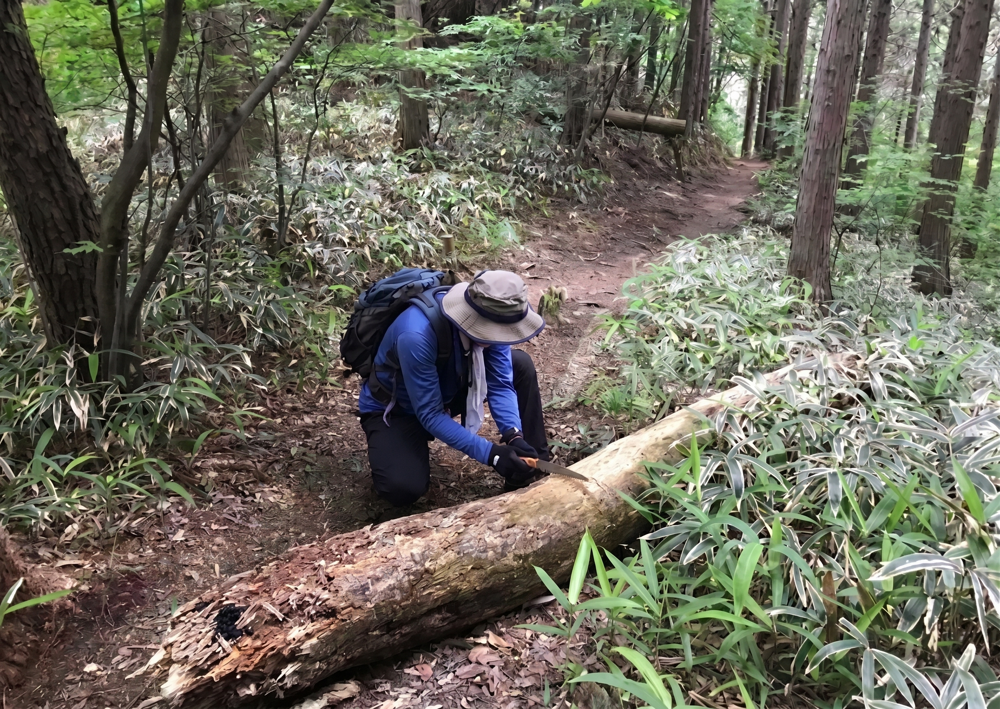

美しい葉山の自然を未来に
葉山町観光協会の案内では、葉山の海岸は南北約4キロメートルにわたり、町内には森戸、一色、 長者ヶ崎・大浜の3つの海水浴場があります[1]。 海辺の景観と山の緑を、暮らす人にも訪れる人にも大切にしてもらえる環境を育てたいと 考えています。
海岸整備では、シャワーや水飲み場、ペットのための水場などの必要性を、利用者の声と現地の 状況から確認します。設備を増やすこと自体を目的にせず、必要な場所、利用が見込まれる時期、 清掃や水道の費用まで含めて検討します。
ブルーフラッグの取得についても、必要な条件や継続的な負担を調べ、取り組む意義を地域の 皆さんと共有したいと考えています。認証を取ることだけを目標にするのではなく、安全で 清潔に利用できる海岸を保ち続けることを大切にします。

2024年度の葉山町へのふるさと納税では、「環境保全等」を使い道とする寄附が259件、 693万2,000円寄せられています[2]。 自然を大切にしたいという思いを、具体的な取り組みと、その成果が伝わる形につなげたいと 考えています。
海岸清掃や山道の整備では、活動回数だけでなく、回収したごみの量、危険箇所の改善、維持 管理にかかった費用なども確認することを提案します。訪れる人にも、清掃への参加や利用 マナーの共有を通じて、自然を守る側に加わってもらいたいと思います。
山でのスポーツやイベントについても、所有者・管理者との調整、動植物への影響、普段から 散策する方との共存を前提に考えます。にぎわいのために自然を使い切るのではなく、 楽しむことが保全につながる関係を目指します。
曲田 和史 KAZUFUMI KYOKUTA